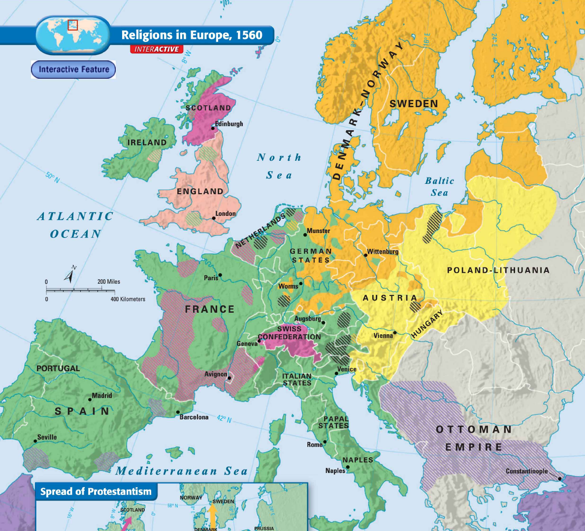

Primary source map
Religions in Europe, 1560

Select a numbered marker to investigate a region.
The map shows dominant traditions. Hatched areas indicate important religious minorities; pale yellow areas were mixed.
Think like a historian
Why might mixed regions and areas with large religious minorities have experienced greater tension?